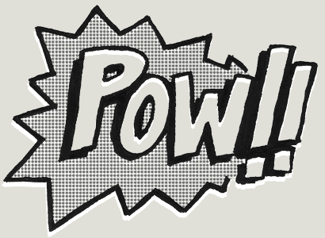

PowderとrbenvとYosemiteと
November 16, 2015
言われるがまま導入したPowderがいつのまにか動かなくなっていた。
いまいちなんなのか分かっていなかったので調べながら直しました。

Powは設定が不要なRails & Rackサーバ。
そしてそのコマンド操作を手助けしてくれるのがpowder。
設定周り
◯ Powのインストール
$ curl get.pow.cx | sh
◯ シンボリックリンクの作成
$ cd ~/.pow
$ ln -s /path/to/myapp
◯ powderのインストール
$ gem install powder
◯ powderコマンド
# link
$ powder link
# unlink
$ powder unlink
# list
$ powder list
# config
$ powder config
# restart
$ powder restart
◯ rbenvで使う時
rbenvで使う場合は~/.powconfigにパスを通す必要がある。
powがrbenvを使っているにもかかわらず、システムのrubyを使ってしまうため。
# ~/.powconfig
export PATH="/Users/kz/.rbenv/shims:/Users/kz/.rbenv/bin:$PATH"